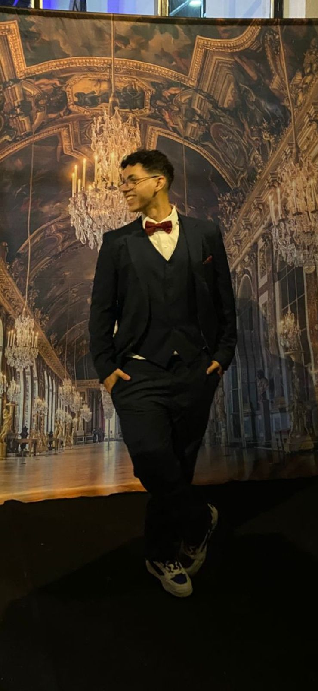

Bem-vindo ao meu portfólio acadêmico!
Meu nome é Davi Andrade
Software Developer

Sobre Mim
Atualmente, sou estudante do curso superior de Tecnologia em Análise e Desenvolvimento de Sistemas na FATEC São José dos Campos.
Concluí o Ensino Médio com formação técnica integrada em Automação Industrial pela ETEC São José dos Campos.
Estou aprendendo Python e Java entre outras tecnologias e colaborando em projetos de API's integrado a banco de dados.
Meu principal objetivo ao cursar Análise e Desenvolvimento de Sistemas é construir uma base técnica sólida que me permita evoluir continuamente, tanto profissional quanto pessoalmente. A tecnologia sempre despertou minha curiosidade, entender como as coisas funcionam, resolver problemas e conseguir criar soluções eficientes é algo que realmente me motiva. Por isso, estou sempre em busca de novos aprendizados, aprimorando minhas habilidades com dedicação e constância.
No meu tempo livre, gosto de me manter ativo praticando esportes, principalmente futebol, JiuJitsu e boxe. Também amo cozinhar, estar com minha família, participar da igreja e estar em ambientes de boa conversa, onde posso conhecer pessoas e trocar experiências. Esses momentos são essenciais para manter meu equilíbrio e minha criatividade.
Caso se interesse pelo meu perfil, aqui está meu curríulo: CV
Formação Acadêmica
ETEC São José dos Campos - Automação Industrial (2022 - 2024)
FATEC São José dos Campos - Análise e Desenvolvimento de Sistemas (2025 - 2027)
Certificados
Projetos
Esteira com Balança Inteligente
Fevereiro - Dezembro de 2024
O objetivo foi construir uma balança implementada em uma esteira, com a função de automatizar o processo de pesagem, implementando a junção dos processos (pesagem e direcionamento) em apenas um, com a tentativa de deixá-lo mais rápido e eficiente, de automatizar processos manuais e direcioná-lo de acordo com o peso obtido.
API de Gerenciamento e cadastro de atestados
Fevereiro - Junho de 2025
Projeto focado em registrar e gerir atestados médicos de alunos, facilitando a comunicação entre estudantes, professores e direção. Utiliza Python, Flask, HTML, CSS e BootStrap
Aplicação Desktop para Gestão de PDIs
Agosto - Dezembro de 2025
Sistema desktop desenvolvido para otimizar e automatizar a criação e o gerenciamento de Planos de Desenvolvimento Individual (PDIs).
A solução utiliza Java (POO) para a lógica de negócio robusta, com interface gráfica construída em JavaFX e integração com banco de dados MySQL para persistência dos dados.
Sistema de Cadastro dos Encontros
Novembro - Dezembro de 2025
O sistema foi desenvolvido para organizar e gerenciar os encontros das Mães Que Oram pelos Filhos, um grupo de oração de uma paróquia.
Permite o cadastro de mães participantes, o gerenciamento dos encontros e serviços e a emissão de relatórios automáticos em .txt.